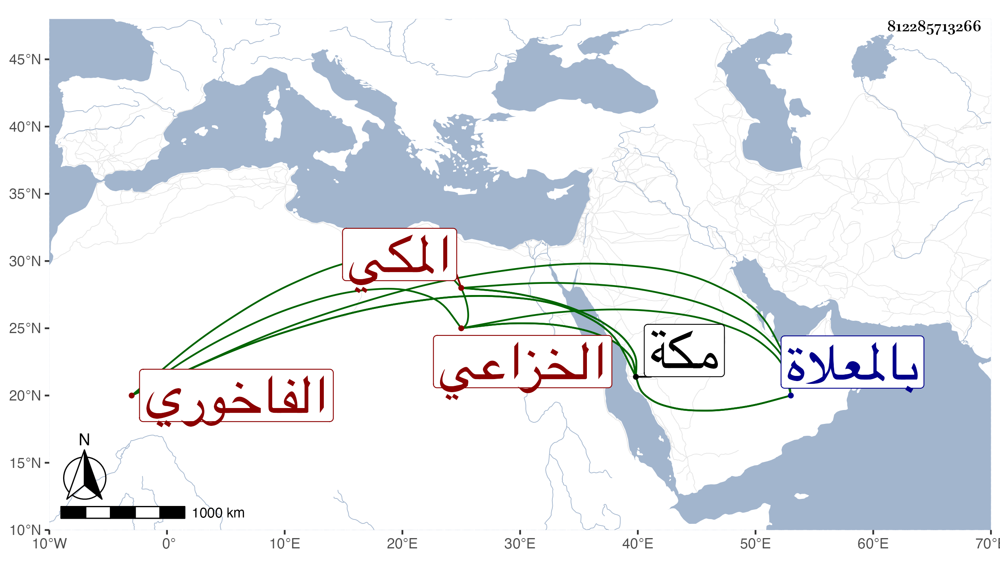

0902Sakhawi.DawLamic.ITO20230111-ara1.EIS1600.812285713266
Biography ID: 812285713266
720
خليفة بن محمد بن خليفة بن سالم الخزاعي الفاخوري المكي . حضر في الرابعة سنة سبع وستين وسبعمائة على العز بن جماعة السيرة النبوية الصغرى له وأجاز في الاستدعاءات ، وكان خادم المولد النبوي برأس شعب بني هاشم من مكة ، خيرا دينا أضر بأخرة وانقطع بمنزله ، ومات في مستهل المحرم سنة ثلاث وثلاثين بمكة ، ودفن بالمعلاة . ذكره التقي بن فهد في معجمه .
